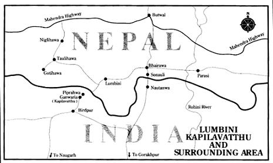

Sống sau hai ngàn rưỡi năm, chúng ta khó mà biết rõ được những hoàn cảnh kinh tế, chính trị và luân lí đã làm cho hai tôn giáo rất nghiêm khắc và rất bi quan như vậy xuất hiện, đạo Jaïn và đạo Phật. Chắc chắn là dưới thống trị của dân tộc Aryen, Ấn Độ đã tấn bộ nhiều về vật chất: nhiều thành phố đã được dụng lên như Patalipatra và Vaishali, kĩ nghệ và thương mại đã tạo được sự phú túc, có phú túc rồi thì được an nhàn. Có lẽ nhờ sự phú túc đó mà chủ nghĩa hưởng lạc và chủ nghĩa duy vật mới xuất hiện ở thế kỉ VII và thứ VI trước công nguyên. Nó lại không lợi cho tôn giáo, ngũ quan muốn thoát li mọi sự bó buộc tinh thần và mong có những triết thuyết giải phóng cho. Cũng như Trung Hoa thời Khổng Tử, ở Hi Lạp thời Protagoras - ấy là chưa nói thời đại chúng ta - ở Ấn Độ, thời Đức Phật ra đời, các tín ngưỡng cũ đã suy vi và trong dân chúng có tâm trạng hoài nghi, hỗn loạn về luân lí. Đạo Jaïn và đạo Phật mặc dầu nhiễm cái thuyết vô thần bi thảm của một thời đại đã mất hết ảo tưởng, đều chống lại chủ nghĩa khoái lạc của một xã hội ăn không ngồi rồi, xa hoa phù phiếm tự cho mình là “tự do, tấn bộ”[1].
Theo truyền thuyết Ấn Độ thì thân phụ Đức Phật, Shuddhodhana [Tịnh Phạn] thuộc giới thượng lưu của thị tộc Gautama trong bộ lạc anh dũng Shakya, quốc vương xứ Kapilavastu ở chân núi
Thành phố Kapilavastu [Ca Tì La Vệ] sắp làm lễ trăng tròn. Bảy ngày trước ngày rằm hoàng hậu Maya [Ma Da] làm lễ long trọng, dùng rất nhiều hoa và dầu thơm nhưng không có rượu. Ngày mùng bảy bà dậy thật sớm, tắm gội bằng hương thuỷ và bố thí bốn trăm ngàn đồng tiền. Y phục rực rỡ, bà ăn những cao lương mĩ vị, đọc lời cầu nguyện Uposatha[3] rồi vô căn phòng đẹp đẽ, lên giường nằm, thiêm thiếp ngủ.
Bà nằm mộng thấy bốn vị đại vương khiêng bà với chiếc giường của bà tới núi Himalaya, rồi đặt bà ở trên đồi Manosila… Tại đây các vị hoàng hậu của họ ra chào bà, dắt bà tới hồ Anatta, tắm rửa cho bà hết mọi ô uế trần thế, quấn bà vào chiếc thiên y, xức dầu thơm và cài những đoá hoa tiên lên áo bà. Gần đó là một núi bạc, trên đỉnh có nhà vàng. Các hoàng hậu đó dọn cho bà một chiếc giường tiên trong ngôi nhà đó, đầu hướng về phía đông và đặt bà lên giường. Lúc đó Bodhisattwa[4] [Phật Bồ Tát] biến hình thành một con voi trắng. Gần đó có một ngọn núi vàng, con voi trắng ở trên núi xuống, từ phương Bắc tới, đặt chân lên núi bạc. Vòi của nó như một cái sừng bằng bạc quắp một bông sen trắng. Rồi nó vừa hí vừa bước vô nhà vàng, đi ba lần chung quanh giường bà, húc nhẹ vào sườn phải, như chui vào bụng bà. Thế là voi trắng bắt đầu một đời sống mới.
Hôm sau, hoàng hậu Maya tỉnh dậy, kể lại giấc mộng cho nhà vua. Nhà vua bèn cho vời sáu mươi bốn tu sĩ Bà La Môn danh tiếng nhất, tiếp đãi họ long trọng, dọn tiệc linh đình và tặng họ nhiều bảo vật. Khi họ no nê rồi, nhà vua bèn nhờ họ đoán mộng. Họ đáp: “Xin nhà vua yên tâm: hoàng hậu sẽ sinh một hoàng tử chứ không phải một công chúa, nếu lớn lên hoàng tử vẫn ở trong cung điện, thì sẽ thành minh quân một nước phú cường thịnh trị, nếu rời bỏ cung điện mà đi chu du thiên hạ thì sẽ thành một vị Phật dắt nhân loại ra khỏi bến mê…”.
Hoàng hậu hoài thai mười tháng, Bodhisattwa ở trong bụng bà như dầu ở trong chén, gần tới ngày sinh nở, bà ngỏ ý muốn về nhà cha mẹ, bèn tâu với vua Shuddhodhana: “Thiếp xin được về nhà cha mẹ thiếp ở Devadaha”. Nhà vua ưng thuận, sai san phẳng con đường từ Kapilavastu tới Devadaha; lại sai bày chậu cảnh, cắm cờ hai bên đường, hoàng hậu ngồi trên một chiếc kiệu bằng vàng do một ngàn thị thần khiêng, phía sau đám đông tiễn chân, nghi tượng chỉnh tề. Ở khoảng giữa hai châu thành có một khu rừng nhỏ mọc cây “sal”[5] gọi là vườn Lumbini, thuộc chung về hai châu thành và dân chúng thường tới dạo cảnh. Lúc đó, từ gốc lên tới cành, cây nào cũng đầy bông, trông xa chỉ thấy một đám bông… Hoàng hậu muốn ngừng lại dạo cảnh một lát. Tới gốc một cây “sal” cổ thụ to lớn, bà muốn vít một cành thì cành tự nhiên rủ xuống vừa tầm tay bà, mềm mại như một cây sậy. Vừa đưa tay lên nắm cành thì bổng thấy chuyển bụng. Đám hộ giá vội giăng màn ở chung quanh rồi rút lui. Vừa lúc đó, còn đương đứng, tay vẫn nắm cành sal, bà sanh hoàng tử… Trẻ khác ở trong bụng mẹ ra thì nhơ nhớp, Bodhisattwa thì không vậy. Như một vị thuyết pháp ở trên đàn bước xuống, như một người xuống cầu thang, Bodhisattwa đưa hai tay hai chân ra, rồi đứng thẳng dậy, thân thể hoàn toàn sạch sẽ, không bợn chút dơ, láng bóng như viên ngọc đặt trên tấm vải Bénarès, Bodhisattwa từ trong bụng mẹ bước xuống như vậy”.

Lâm Tì Ni (Lumbini) và Ca Tì La Vệ (Kapilavastu hay Kapilavatthu)
Chúng ta cũng biết thêm rằng khi Đức Phật ra đời thì ánh sáng rực rỡ hiện trên trời, những người điếc bỗng nghe được, những người câm bỗng nói được, những kẻ què quặt bỗng đứng dậy được, các vị thần trên trời cuối xuống nhìn vào các vua chúa ở thật xa lại chúc mừng. Tiếp theo là đời sống rực rỡ xa hoa thời thiếu niên của Ngài, lời văn bóng bẩy, đẹp đẽ. Ngài sống sung sướng “như một vị thần” trong ba cung điện, vua cha rất cưng, tránh cho Ngài khỏi phải thấy những cảnh khổ, buồn rầu của kiếp người. Có bốn vạn vũ nữ bày trò vui cho Ngài, và tới tuổi kết hôn, người ta trình diện cho Ngài năm trăm thiếu nữ diễm lệ để Ngài lựa. Vì thuộc tập cấp kshatriya, Ngài được học đủ mọi môn võ bị, nhưng Ngài cũng theo học các vị minh triết và làu thông mọi triết thuyết được thời đó chấp nhận. Ngài cưới vợ, rồi có con, sống trong cảnh phú quí, yên ổn, được mọi người trọng vọng.
Một hôm – cũng theo truyền thuyết – Ngài ra khỏi cung điện, dạo chơi thăm cảnh phố phường, và thấy một ông già trong đám đông, một hôm khác Ngài thấy một người đau, sau cùng lần thứ ba Ngài thấy một người chết. Theo thánh thư do đệ tử chép thì chính Ngài kể lại chuyện đó như sau:
Ôi, chư tăng, ta vốn tôn nghiêm và rất đổi đa cảm, lúc đó ta nghĩ bụng: “Một người thường, vô học, khi trông thấy một ông già tất lo lắng, xấu hổ, tởm vì nghĩ tới nỗi sau của mình. Và ta cũng vậy ta cũng sẽ phải già, không tránh được cảnh già, thế thì ta cũng lo lắng, tởm khi thấy một ông già ư?”. Ta nghĩ đường đường như ta thì không nên vậy. Rồi trong khi suy nghĩ, tất cả lòng tự cao tự đại của ta hồi trẻ bỗng biến mất… Vậy, chư tăng, trước khi được giác ngộ, chính ta cũng phải theo luật thiên nhiên là do cha mẹ sinh ra, ta suy nghĩ về bản thể của sự sinh, chính ta cũng phải theo luật tự nhiên là sẽ già, ta suy nghĩ về bản thể của sự già nua, sự đau ốm, sự buồn rầu và sự ô trọc. Và ta nghĩ bụng: “Ta phải theo cái luật “sinh” đó mà bây giờ suy nghĩ về bản thể của sự “sinh” thì sẽ ra sao… và thấy được cái bản thể đáng thương của sự “sinh”, ta mới tìm cái cảnh bình tĩnh cực kì của Niết bàn”.
Tôn giáo nào thì mới đầu cũng suy nghĩ về sự chết, có lẽ nếu không có sự chết thì không có các vị thần. Đối với Phật, những cảnh tượng đó làm cho Ngài bắt đầu “giác ngộ”. Ngài như thình lình “cảm tâm”, quyết bỏ cha già, vợ và con thơ lại mà sống cuộc đời một nhà tu hành khổ hạnh trong rừng núi. Đêm sau Ngài rón rén vào phòng vợ để nhìn lần cuối cùng em bé Rahula[6]. Đoạn chép trong thánh thư Phật giáo về lúc đó, các tín đồ Gautama đều thuộc lòng. Đoạn đó như sau:
Ngọn đèn dầu – loại dầu có hương khí – đương leo lét cháy. Trên giường có rắc hoa nhài và các thứ hoa khác, thân mẫu em Ruhula đương ngủ, bàn tay đặt trên đầu con. Đức Bodhisattwa đứng ở bậc cửa, nhìn cảnh tượng đó và nghĩ bụng: “Nếu ta gạt tay nàng ra để bồng con lên thì nàng sẽ tỉnh mất và ta khó mà rứt ra đi được. Thôi để khi nào thành Phật, sẽ trở về thăm con”. Rồi Ngài quay ra, bước xuống thềm.
Lúc đó chưa sáng. Ngài cưỡi con ngựa Kanthaka [Kiền trắc] ra khỏi châu thành. Chauna [Xa Nặc], mã phu của Ngài, níu lấy đuôi ngựa một cách thất vọng. Tức thì Mara (Ma vương) hiện ra để dụ dỗ Ngài, hứa tặng Ngài những vương quốc lớn. Ngài từ chối, tiếp tục đi, gặp một con sông, con ngựa nhảy vọt một cái qua ngay bờ bên kia. Ngài muốn quay lại ngó nơi chôn nhau cắt rốn của mình một lần nữa, nhưng cố nén được lòng. Lúc đó trái đất mênh mông bèn quay nửa vòng thành thử không quay lại mà Ngài cũng thấy châu thành.
Ngài ngưng lại một nơi gọi là Uruvela[7]. Ngài bảo: “Lúc đó ta nghĩ bụng chỗ này phong cảnh đẹp đẽ, có rừng cao, có suối trong, có nơi thích thú để tắm, chung quanh có đồng cỏ và làng xóm”. Ở đó Ngài tu khổ hạnh một cách nghiêm khắc nhất luôn sáu năm theo phái Yoga [Du già] thời đó đã xuất hiện ở Ấn Độ. Ngài sống bằng cây cỏ, có hồi sống bằng phân nữa. Thức ăn giảm xuống hoài cho tới khi mỗi ngày chỉ ăn một hạt gạo.
Tết cỏ làm quần áo. Để tự hành hạ, Ngài nhổ tóc, nhổ râu, hết sợi này tới sợi khác, nằm gai và đứng thẳng hàng mấy giờ không nhúc nhích. Thân thể cáu ghét bụi, xù xì như thân cây cổ thụ. Rồi Ngài lại tới ngủ giữa một bãi chứa chất các thây thú vật và ác điểu. Ngài kể tiếp:
Ta nghĩ bụng: “Nếu mình nghiến chặt răng, ép lưỡi lên màng cúa, dùng tinh thần để diệt tinh thần, thì sẽ ra sao?” (ta làm đúng như vậy). Mồ hôi từ nách ròng ròng chảy xuống… Rồi ta nghĩ bụng: “Nếu ta rán nín thở để đạt tới trạng thái xuất thần thì sẽ ra sao?”. Thế là ta nín thở, không thở bằng miệng, cũng không thở bằng mũi. Và trong khi ta nín thở như vậy thì ta thấy một tiếng gió mạnh từ trong lỗ tai thổi ra. Như thể một người lực lưỡng thọc mũi kiếm vào đầu ta vậy, có tiếng gió mạnh ù ù trong óc… Rồi nghĩ bụng: “Nếu ta ăn thật ít, chỉ một nhúm hạt đậu, hay hạt gạo thì sẽ ra sao?”. Thân thể ta chỉ còn xương với da. Vì thiếu ăn, ta gầy gò quá, ngồi xuống đám bụi mà chỉ để hằn xuống một vết nhỏ bằng vết chân con lạc đà. Vì thiếu ăn, khi ta nằm xuống thì xương sống như một chuỗi ống chỉ nhỏ. Vì thiếu ăn, mắt ta hỏm xuống như một cái giếng sâu và tia mắt từ trong chiếu ra lấp lánh như làn nước ở đáy giếng. Vì thiếu ăn, da đầu ta nhăn nhúm lại y như vỏ một quả bầu hái non để dãi dầu dưới mưa, ngoài nắng. Lúc đó nắm vào bao tử thì thấy nó dẹp lép, ngón tay đụng tới xương sống. Ta rán nghỉ ngơi một chút nhưng lảo đảo, ta té úp mặt xuống đất vì thiếu ăn. Ta xoa bóp chân tay cho cơ thể bớt nhức nhối, xoa tới đâu lông rụng tới đó, vì thiếu ăn.
Nhưng một hôm Đức Phật nghĩ rằng sự khổ hạnh đày ải tấm thân không phải là cách hay nhất để giác ngộ. Có lẽ ngày đó Ngài đói hơn những ngày khác, hoặc một kĩ niệm êm ái nào đó làm dao động lòng Ngài. Ngài thấy rằng tất cả sự khổ hạnh đó không làm cho Ngài giác ngộ như Ngài mong muốn. “Cách tu khắc khổ đó không đem lại cho ta sự giác ngộ siêu phàm, cái nhuệ trí của lương tâm – mà chỉ cái này mới thực cao cả”. Trái lại là khác: nếu có nhờ cách đó mà tinh thần thanh thoát được một chút ít thì lại mắc cái thói tự cao tự đại rằng mình đã chịu nổi mọi nỗi khổ hạnh. Thế là Ngài bỏ lối tu đó, lại ngồi dưới bóng mát cây cổ thụ. Ngài ngồi đó, tuyệt nhiên không nhúc nhích, quyết tâm bao giờ tự giác rồi mới đi chỗ khác. Ngài trầm tư: cảnh sinh lão bệnh tử do đâu mà ra? Bỗng Ngài cảm thấy cái cảnh sinh tử, tử sinh cứ nối tiếp nhau một cách bất tuyệt, có sinh thì có tử có tử thì có sinh, mỗi lần tâm hồn yên ổn, vui vẻ thì lại ước ao những vui khác rồi chịu những âu sầu khác, thất vọng khác, đau khổ khác. “Như vậy, khi tinh thần ta đã thanh tĩnh, trong trẻo rồi, ta đã trầm tư về lẽ sinh rồi tử, tử rồi sinh của muôn loài. Trong một lúc thiên thị, trong trẻo, siêu nhiên, ta thấy các sinh vật, dù sang dù hèn, dù xấu dù đẹp, đều chết rồi tái sinh, chịu cái kiếp sung sướng hay khổ tuỳ theo cái Karma [Nghiệp] của mình nghĩa là theo luật nhân quả phổ biến này: làm điều thiện thì được thưởng, làm điều ác thì bị phạt trong kiếp này hoặc trong kiếp sau, khi linh hồn đầu thai rồi.
Chính vì thấy cảnh liên tục sinh tử, tử sinh đó, Đức Phật đâm chán ngán về kiếp người. Ngài bảo: sinh là nguồn gốc của mọi khổ não. Vậy mà loài người cứ phải tái sinh hoài, có khác gì để làm cho biển khổ không lúc nào vơi không… Vì đâu cái dòng “sinh sinh” đó không ngừng lại? Chỉ có luật Karma luôn luôn bắt người ta phải đầu thai hoài để linh hồn chuộc tội trong những kiếp trước. Nếu có một người nào sáng suốt sống công bằng, một mực nhẫn nhục, nhân từ với mọi người, nếu lòng người đó không ràng buộc với những cái phù du nhất thời mà chuyên chú vào những cái vĩnh cửu, thì có lẽ người đó hi vọng thoát được cảnh tái sinh mà cái dòng suối khổ não sẽ cạn chăng? Nếu người ta có thể nén cái thị dục vị kỉ mà rán chỉ làm điều thiện thì có lẽ vượt được cái bản ngã – nó là ảo tưởng đầu tiên và tệ hại nhất của con người – và linh hồn có thể hoà đồng, hợp nhất với cái đại ngã vô biên vô thức chăng? Gột sạch được những tư dục đó, lòng người sẽ được bình tĩnh làm sao? Không gột sạch được thì làm sao bình tĩnh? Ở dưới trần này không sao có hạnh phúc được, như bọn vô tín ngưỡng thường nghĩ, mà kiếp sau cũng không sao có hạnh phúc được như biết bao tôn giáo đã tuyên bố. Nói bậy hết ráo. Chỉ được bình tĩnh khi nào diệt được dục, lúc đó linh hồn sẽ yên ổn, thanh thoát trong cảnh Niết Bàn.
Vậy là sau bảy năm trầm tư, Đức Phật tìm được nguyên nhân của đau khổ, Ngài lại đất thánh Bénarès [Ba La Nai] và trong vườn hươu [lộc uyển] Sarnath bắt đầu giảng thuyết Niết Bàn cho nhân loại.
Chân dung Đức Phật – Phương pháp của Ngài – Tứ diệu đế - Bát chính – Ngũ giới – Đức Phật và Chúa Ki Tô – Thuyết bất khả tri và chủ trương phản đối giáo hội – Chủ trương vô thần của Phật – Tâm lí học vô linh hồn – Ý nghĩa của Niết Bàn
Cũng như mọi nhà truyền giáo thời đó, Đức Phật đã giảng đạo lý trong các cuộc đàm thoại, trong các cuộc hội nghị, hoặc bằng những ngụ ngôn. Cũng như Socrate và Chúa Ki Tô, không bao giờ Ngài có ý chép lại đạo của Ngài thành sách, mà chỉ tóm tắt những ý chính thành những sutta. Theo những hồi kí của những đệ tử đầu tiên của Ngài thì tính tình Ngài hiện rõ lời Ngài giảng dạy đó, và Ngài là nhân vật đầu tiên trong lịch sử Ấn Độ lưu lại cho ta một bức chân dung rõ rệt: một người rất nhiều nghị lực, uy nghi và hào hùng, nhưng ngôn ngữ và cử chỉ rất dịu dàng và có đức bao dung vô cùng. Ngài không[9] tự cho mình được thiên khải. Trong các cuộc tranh luận, Ngài tỏ ra kiên nhẫn và tôn trọng ý kiến của người khác hơn hết thảy các đại sứ đồ của nhân loại. Cứ theo lời các đệ tử của Ngài – có lẽ họ cũng hơi nói quá – thì Ngài theo đúng giới luật ahimsa: “Gautama cố tránh không làm huỷ hoại đời sống của bất kì một sinh vật nào. Ngài là chiến sĩ Kshatriya mà lại bỏ gươm giáo, rất ghét sự tàn bạo, lòng cực kì nhân từ, Ngài tỏ niềm ái ưu với tất cả các sinh vật… Không khi nào nói xấu, vu oan cho ai… Ngài sống cơ hồ như chỉ để hoà giải những kẻ chia rẽ, khuyến khích những kẻ hoà hợp với nhau, Ngài yêu hoà bình, phụng sự hoà bình, chỉ thốt những lời hoà bình”. Như Lão Tử và Ki Tô, Ngài “dĩ đức báo oán”, ai không hiểu Ngài mà nhục mạ thì Ngài làm thinh. “Nếu một người nổi điên lên mà làm hại tôi thì tôi lấy tình thương mà che chở cho người đó, người ấy càng làm điều ác cho tôi thì tôi càng làm điều thiện cho người ấy”. Một lần một kẻ chất phác nọ mạt sát Ngài, Ngài lặng thinh nghe kẻ đó nói xong rồi, Ngài hỏi lại: “Này con, nếu một người không chịu nhận một tặng vật nào đó thì tặng vật đó thuộc về ai?”. Kẻ đó đáp: “Về người đem tặng”. – “Vậy thì ta không nhận những lời mạt sát của con đâu, con nên giữ lấy cho con”. Trái với nhiều vị thánh khác, Phật có tinh thần hài hước và biết rằng bàn tới siêu hình mà không mỉm cười thì không là nhã.
Ngài có một cách đặc biệt để thuyết pháp, mặc dầu cách đó một phần nào chịu ảnh hưởng cách của các nhà nguỵ biện lang thang đương thời. Ngài đi từ châu thành này tới châu thành khác, cùng với một nhóm đệ tử thân tín và phía sau là cả một đám đông, có khi tới 1.200 tín đồ. Không bao giờ lo tới ngày mai, những kẻ ngưỡng mộ dâng thức gì thì Ngài ăn thức đó, có lần Ngài nhận lời dùng cơm trong nhà một ả giang hồ, làm cho kẻ tả hữu của Ngài bực tức. Thường thường Ngài ngừng lại ở đầu một làng nào đó, cắm trại trong một khu rừng hoặc bên bờ sông. Buổi chiều và buổi tối Ngài thuyết pháp. Ngài đặt những câu hỏi như Socrate, hoặc kể một ngụ ngôn có tính cách luân lí, hoặc cùng đàm đạo, biện luận một cách lễ độ, đưa ra những câu ngắn, cô đọng, tóm tắt được đạo của Ngài để mọi người dễ nhớ. Sutta được Ngài thường nhắc nhở tới nhất là sutta về “tứ diệu đế”, trong đó Ngài bảo rằng sống là khổ, khổ do dục mà ra, và diệt mọi dục vọng được thì minh triết:
1. Bây giờ, hỡi chư tăng, ta giảng đến khổ đế: sinh là khổ, bệnh là khổ, lão là khổ, rầu rĩ, than khóc, táng tâm trí, thất vọng là khổ…
2. Bây giờ, hỡi chư tăng, tới tập đế: nguyên nhân của cái khổ là nhân dục vô nhai nó làm cho con người tái sinh hoài, dục vọng đó kết hợp với sự ham thích, dâm dật, lúc nào cũng muốn thoả mãn cho được, nguyên nhân là cái ham mê, ham mê là thực thể.
3. Bây giờ, hỡi các chư tăng, tới diệt đế: phải diệt cho hết dục vọng, nhu cầu bằng cách thoát tục.
4. Bây giờ, hỡi chư tăng, tới đạo đế: con đường giải thoát gồm bát chánh: chánh kiến[10], chánh tư duy, chánh ngữ, chánh nghiệp, chánh mệnh, chánh tinh tiến, chánh niệm, chánh định.
Phật tin rằng dù có lúc vui thì cũng không đủ bù những lúc khổ, và như vậy thà đừng sinh ra là hơn. Nước mắt của loài người nhiều hơn nước bốn biển. Vả lại nỗi vui nào cũng có phần chua chát là vì nó ngắn ngủi quá. Ngài hỏi một đệ tử: “Vui với buồn, cái nào nhất thời?”. Đệ tử đáp: “Bạch sư phụ, cái buồn”. Cái buồn tệ hại nhất, không phải là cái tanha, toàn thể dục vọng, mà là cái dục vọng vị kỉ, dục vọng hướng về cái lợi riêng của một phần tử chứ không phải cái lợi chung của toàn thể, nhất là cái tính dục nó làm cho con người sinh con đẻ cái, thêm hoài những khoen mới vào cái chuỗi sinh sinh, tạo nên những nỗi khổ mới chẳng có mục đích gì cả. Một đệ tử nghe Ngài giảng, cho rằng Ngài chấp nhận sự tự tử, Ngài bảo không phải vậy vì tự tử không ích lợi gì hết: linh hồn chưa được thanh khiết, vẫn còn dục vọng thì còn phải đầu thai hoài cho tới khi hoàn toàn trút hết được bản ngã mới thôi.
Đệ tử xin Ngài giảng rõ thêm về “chánh mệnh”, Ngài bèn đặt ra “ngũ giới” – những giới luật ngắn và giản dị, nhưng “có lẽ hàm súc hơn mà cũng khó theo hơn “thập giới” trong Do Thái giáo”:
1. đừng sát sanh.
2. đừng trộm cắp.
3. đừng vọng ngữ.
4. đừng uống rượu.
5. đừng tà dâm.
Về một khía cạnh nào đó, lời dạy của Phật hợp với lời dạy của Ki Tô một cách lạ lùng, cơ hồ như Phật giáo báo trước Ki Tô giáo. “Dĩ nhân đáp sân, dĩ đức báo oán… Thắng thì gây oán vì kẻ bại thấy đau khổ… Không bao giờ oán diệt được oán, chỉ yêu mới diệt được oán”. Cũng như Ki Tô, Ngài ngượng nghịu khi tiếp xúc với phụ nữ và Ngài đã do dự lâu lắm mới cho họ vào tăng hội. Một hôm, một đệ tử thân tín, Ananda, hỏi:
“Bạch tôn sư, đối với phụ nữ phải làm sao?”
“Tránh đừng nhìn họ, Ananda.”
“Nhưng nếu nhìn họ thì phải làm sao?”
“Đừng nói với họ, Ananda”
“Nhưng nếu họ hỏi trước thì phải làm sao?”
“Phải mở mắt cho kĩ, Ananda”.
Tôn giáo của Ngài sự thực chỉ gồm phần đạo đức, luân lí, Ngài chỉ chú trọng tới cách cư xử, không quan tâm tới nghi tiết, lễ bái, tới siêu hình học, thần học. Một hôm, một tu sĩ Bà La Môn, trước mặt Ngài, ngỏ ý muốn tắm sông ở
Kevaddha này, một hôm có một bạn đồng đạo của chúng ta tự hỏi câu này: “Bốn nguyên tố đất, nước, lửa, và gió tiêu diệt đâu mất mà không để lại chút di tích nào cả thế?”. Bạn đó suy nghĩ hoài về vấn đề đó riết rồi xuất thần, té xuống và thấy rõ ràng con đường mở ra trước mặt đưa tới xứ các Thần linh.
Kevaddha này, thế là bạn đó tới thiên quốc của bốn vị đại vương, hỏi các vị thần ở đó: “Nay, chư huynh, bốn nguyên tố đất, nước, lửa và gió tiêu diệt đâu mất mà không lưu lại chút di tích nào cả thế?”. Bạn đó hỏi như vậy xong, các thần linh ở thiên đường của bốn vị thần đáp lại: “Chúng tôi không biết được huynh ạ. Nhưng có bốn vị đại vương khác quyền uy lớn hơn vinh quang rực rỡ hơn chúng tôi nhiều. Các vị đó chắc biết được. Thế là, Kevaddha này, bạn đó đi kiếm bốn vị đại vương khác, hỏi họ cũng câu đó, họ cũng đáp lại như vậy, rồi lại bảo bạn đó đi hỏi ba mươi vị này [các vị vua khác][12]; ba mươi vị này lại bảo bạn ấy kiếm vua của họ, tức Sakka; Sakka cũng không đáp được, lại bảo đi hỏi các thần Yama; các vị thần này lại bảo đi hỏi vua của họ là Suyama; Suyama lại bảo đi hỏi các thần Tusita; các vị thần này lại bảo đi hỏi vua của họ là Santusita; Santusita lại bảo đi hỏi các thần Nimmana-rati, các vị thần này lại bảo đi hỏi vua của họ là Sunimmita, Sunimmita lại bảo đi hỏi các thần Para-nimmita, các vị thần này lại bảo đi tìm vua của họ là là Paranimmita Vatsavatti; Vatsavatti bảo đi hỏi các thần Brama – thế giới[13].
Lúc đó, Kevaddha này, bạn của chúng ta trầm tư đến nỗi thấy con đường đưa tới Brama -thế giới. Bạn đó bèn đi kiếm các vị thần theo hầu.
Bạn đó hỏi: “Này các chư huynh, bốn nguyên tố đất, nước, lửa và gió tiêu diệt đâu mất mà không lưu lại chút di tích nào cả thế?”. Bạn đó hỏi như vậy xong, các vị theo hầu Brama đáp: “Chúng tôi không biết được, huynh ạ, nhưng còn đấng Brama, đại Brama, đấng Duy nhất, Quyền năng tối cao, Trông thấy hết thảy, Chủ tể vạn vật, đấng Kiểm soát, Sáng tạo, Chỉ huy hết thảy… Đấng Thuỷ tổ của ngày tháng, Cha của mọi vật hiện có và sẽ có! Đấng đó quyền uy lớn hơn, vinh quang rực rỡ hơn chúng tôi. Chắc đấng đó biết được”.
“Đấng đại Brama đó hiện nay ở đâu?
“Huynh ạ, chúng tôi không biết Đấng Brama ở đâu, không biết tại sao có ngài, Ngài từ đâu tới, nhưng khi nào huynh thấy những dấu hiệu báo trước Ngài tới, khi nào ánh sáng phát ra, vì ánh sáng và hào quang rực rỡ là dấu hiệu báo trước Ngài xuất hiện.
Và, Kevaddha này, một lát sau, đại Brama xuất hiện, bạn của chúng ta tiến lại hỏi: “Này huynh, bốn nguyên tố đất, nước, lửa và gió tiêu diệt đâu mất mà không lưu lại chút di tích nào cả thế?”.
Bạn đó vừa hỏi xong, đại Brama đáp:
“Huynh ạ, tôi là đại Brama, đấng tối cao, Quyền năng tột bực, Trông thấy hết thảy, Chủ thể vạn vật, đấng Kiểm soát, Sáng tạo, Chỉ huy hết thảy, chính tôi đặt mọi người vào địa vị của họ, tôi là Thuỷ tổ của ngày tháng, Cha của mọi vật hiện có và mọi vật sẽ có!”.
Bạn của chúng ta bèn hỏi Brama: “Tôi không hỏi huynh có thực đấng có đủ quyền năng như huynh nói hay không. Tôi chỉ hỏi: “Bốn nguyên tố đất, nước, lửa và gió tiêu diệt đâu mất mà không lưu lại chút di tích nào cả thế?”. Thế mà, Kevaddha ơi, thần đại Brama vẫn đáp như trước. Bạn của chúng ta hỏi lần thứ ba. Và, Kevaddha này, đại Brama kéo bạn chúng ta lại một chỗ vắng bảo nhỏ: “Tất cả những vị thần theo hầu Brama – thế giới đó đều tin rằng không có gì mà tôi không thấy, không có gì mà tôi không hiểu, không có gì mà tôi không thực hiện được. Vì vậy mà tôi không muốn trả lời trước mặt họ. Này huynh ạ, tôi thú thật không biết bốn nguyên tố đất, nước, lửa và gió tiêu diệt đâu mất mà không lưu lại chút di tích nào cả”.
Khi có vài môn đệ nhắc Phật rằng một số tu sĩ Bà La Môn tự cho rằng có thể giải đáp được những vấn đề đó. Ngài chế nhạo họ: “Này các bạn, có một số người tu hành khổ hạnh và một số Bà La Môn nhủi như trạch, tay các bạn không làm sao nắm được, khi ta hỏi họ một câu về vấn đề này hay vấn đề khác thì họ né tránh, họ như loài lươn”. Đối với các tu sĩ đương thời, Ngài có giọng châm chích nhất; Ngài cho họ là ngây thơ khi tin rằng lời trong các kinh Veda là lời thiên khải, và Ngài làm cho đẳng cấp Bà La Môn tự cao tự đại phải phẫn nộ khi Ngài thu nhận vào tăng hội bất kì người trong tập cấp nào. Ngài không chỉ trích thẳng chế độ tự phân chia tập cấp nhưng bảo các đệ tử: “Các con nên đi thuyết pháp khắp các xứ, tới đâu cũng bảo rằng giàu nghèo, sang hèn gì thì mọi người cũng như nhau, và mọi tập cấp tan hoà trong tôn giáo của ta cũng như mọi con sông tan vào biển cả”. Ngài không nhận những mantra (thánh ca) và những thần chú, cũng không chấp nhận sự khổ hạnh, sự tụng niệm, cầu nguyện. Cứ từ từ, dịu dàng, không tranh biện, Ngài thành lập một tôn giáo không tín điều, không tăng lữ và tuyên bố rằng con đường giải thoát mở ra cho mọi người, cả những người không theo đạo.
Đôi khi, vị thánh nổi danh nhất Ấn Độ, từ chủ trương Bất-khả-tri bước qua chủ trương vô thần triệt để[14]. Ngài tuyên bố thẳng rằng không có thần linh, và có khi nào nói tới Brama thì Ngài coi Brama như một thực thể, chứ không phải là một khái niệm; Ngài không đả đảo tục cúng thần trong dân chúng, nhưng Ngài mỉm cười khi nghĩ rằng người ta sao có thể dâng lời cầu nguyện lên một đấng Bất-khả-tri: “Thật là điên khùng mới nghĩ rằng một người khác có thể làm cho ta sung sướng hoặc cực khổ”, hạnh phúc và khổ chỉ là “quả”, mà động tác, thái độ, dục vọng của ta mới là “nhân”. Không khi nào Phật doạ môn đồ rằng sẽ bị thần linh trừng phạt nếu không ăn ở đúng đạo; Ngài không nhận có thiên đường, có địa ngục. Ngài cảm thấy rất rõ ràng rằng con người đau và chết là do những luật sinh hoá tự nhiên, chứ không phải do ý chí của một thần linh. Trong hỗn hợp thiện và ác, có trật tự và vô trật tự đó, Ngài không tìm ra được một qui tắc bất di bất dịch nào cả, không một trung tâm luân lí lâu bền cả; Ngài chỉ thấy cuộc sống lên rồi xuống, tiến thoái như thuỷ triều, mà cái cứu cánh duy nhất có tính cách siêu hình chỉ là sự biến dịch.
Thần học của Ngài là một thứ thần học vô thần, mà tâm lí học của Ngài cũng là một thứ tâm lí học vô linh hồn: Ngài tuyệt nhiên không chấp nhận thuyết vô linh hồn, thuyết của Ngài hợp với thuyết của Hume. Chúng ta không thể biết được chút gì cả ngoài những cảm giác ngoài ngũ quan; vậy thì vật chất nào cũng là sức mạnh, thực chất nào cũng vận hành. Đời sống chỉ là một sự biến dịch, một dòng thản nhiên sinh rồi tử; “linh hồn” là một huyền thoại mà trí óc yếu ớt của ta, muốn cho tiện, đặt nó một cách vô lí ở sau những trạng thái ý thức của ta. Cái “linh hồn siêu nhiên trực giác” chỉ là một cái bóng; chỉ cảm giác có thực, nó tự sắp đặt rồi gãy thành kí ức, thành ý nghĩ. Ngay cái “ngã” cũng không phải là thực thể ở ngoài những trạng thái tinh thần đó; nó chỉ là sự tiếp tục của những trạng thái ấy, kí ức của những trạng thái xảy ra thời trước hiện lại trong những trạng thái xảy ra thời sau, thêm vào đó những tập tục tinh thần và luân lí, những khả năng và xu hướng của cơ thể. Sự tiếp nối nhau của các trạng thái đó không do một “ý chí” thần bí nào quyết định, mà do di truyền, thói quen, nội cảnh và hoàn cảnh. Cái tinh thần nó chảy như dòng nước đó, mà bản thể chỉ là những tâm trạng nối tiếp nhau, cái linh hồn đó hoặc cái “ngã” đó, do di truyền và kinh nghiệm mà thành, không thể nào bất diệt được, nếu ta hiểu bất diệt là có thể tồn tại hoài. Các vị thánh, ngay Phật nữa, chết rồi cũng là hết.
Nhưng nếu như vậy thì làm sao giảng được sự tái sinh? Nếu không có linh hồn thì cái gì đầu thai để trả lại nghiệp trong kiếp trước? Đó là nhược điểm trong triết lí Phật; Ngài không bao giờ thẳng thắn giải sự mâu thuẫn giữa thuyết tâm lí duy lí đó với sự chấp nhận thuyết luân hồi một cách dễ dàng, chẳng phê phán gì của Ngài. Thuyết luân hồi rất phổ biến ở Ấn Độ tới nỗi người Ấn nào không theo Hồi giáo cũng chấp nhận nó như một công lí, nghĩa là một định lí hiển nhiên, không cần phải bàn bạc nữa mà cũng gần như chẳng cần phải tìm kiếm chứng cứ nữa. Biết bao thế hệ ngắn ngủi kế tiếp nhau trong xứ đó, nên tự nhiên con người nghĩ tới luân hồi của sinh lực – hoặc, nếu muốn dùng ngôn ngữ thần học – của linh hồn. Phật tự nhiên có ý niệm đó, như chúng ta hít không khí ở chung quanh ta: đó là điều duy nhất mà không bao giờ Ngài nghi ngờ. Luôn luôn Ngài cho bánh xe Luân hồi và luật Karma (Nghiệp báo) là đúng: Ngài chỉ nghĩ tới cách thoát ra khỏi vòng luân hồi và thực hiện được ở trên kiếp trần này cảnh Niết Bàn, rồi tới sự huỷ diệt hoàn toàn.
Vậy Niết Bàn là gì? Khó mà đáp một cách minh bạch quả quyết được, vì Phật không cho biết chút gì về điều đó; còn những người nối chí Ngài thì đưa ra đủ cách định nghĩa. Ngôn ngữ Sanscrit thường cho nó cái nghĩa là “tắt” như ngọn đèn hay ngọn lửa tắt. Các thánh thư Phật giáo cho nó những ý nghĩa như sau: a/ trạng thái thảnh thơi sung sướng mà người ta có thể đạt được ngay trên cõi trần này sau khi diệt hết mọi tư dục; b/ sự giải thoát của cá nhân khỏi cái vòng luân hồi; c/ sự tiêu diệt được ý thức cá nhân; d/ sự hoà hợp cá nhân với Thượng Đế; e/ cảnh thiên đường sau khi chết.
Cứ theo lời dạy của chính Đức Phật mà đoán thì Niết Bàn cơ hồ như có nghĩa là diệt mọi tư dục, nhờ vậy mà thoát cảnh luân hồi. Trong các sách Phật giáo, từ ngữ đó thường có nghĩa thế tục vì ta thường thấy nhắc tới danh từ Arhat (La Hán), trỏ một vị minh triết đã lần lần vượt được bảy giai đoạn dưới đây: tự chủ, tìm được chân lí, có nghị lực, bình tĩnh, vui vẻ, tập trung tư tưởng và đại độ. Đó là nội dung chứ không phải nguyên nhân của Niết Bàn. Sở dĩ đạt được cảnh Niết Bàn là nhờ diệt được mọi tư dục và trong hầu hết các sách giải thích đầu tiên thì Niết Bàn có nghĩa là an tĩnh, thoát khỏi mọi nỗi đau khổ nhờ tự huỷ diệt mình được – theo nghĩa tinh thần. Đức Phật bảo: “Và bây giờ ta giảng tới diệt đế. Diệt đế là diệt cho hết mọi đam mê, là liệng bỏ, huỷ bỏ, tự giải thoát khỏi cái khát khao đó” – tức cái dục vọng ích kỉ. Theo thuyết của Phật thì Niết bàn gần như đồng nghĩa với toàn phúc, với trạng thái thoả mãn bình tĩnh của tâm hồn khi ta không còn nghĩ lo về bản thân nữa. Tuy nhiên, Niết Bàn còn có nghĩa là huỷ diệt, là thoát khỏi vòng luân hồi, phần thưởng cao nhất của người tu hành đắc đạo.
Phật bảo rốt cuộc chúng ta thấy thuyết cá nhân về phương diện luân lí hay tâm lí đều là ngu muội. Những cái “ngã” của ta lúc nào cũng lo lắng, xao động, thực ra không phải là những sinh vật cá biệt, mà chỉ là những gợn sóng trên dòng nước. Khi chúng ta đã tự coi mình chỉ là những phần tử trong một toàn thể lớn lao (trong cái Đại Ngã), khi chúng ta đã cải hoá được những cái “tiểu ngã” của chúng ta, cho những dục vọng riêng tư nhập vào dục vọng của Đại Ngã thì những thất vọng, thất bại cá nhân của ta, những đau khổ của ta và ngay cả cái chết không tránh khỏi được của ta nữa, cũng không làm cho rầu rĩ, chua chát, vì tất cả những cái đó tan mất trong cái vô biên. Khi chúng ta biết yêu, không phải cái đời sống cá biệt của ta mà toàn thể nhân loại và toàn thể các sinh vật thì lúc đó chúng ta mới thấy được sự an tĩnh.
V. NHỮNG NGÀY CUỐI CÙNG CỦA PHẬT
Các phép màu của Ngài – Ngài trở về thăm nhà - Tăng lữ - Ngài tịch
Bây giờ chúng ta phải từ ngọn núi triết lí đó tụt xuống mà nghe những truyện hoang đường ngây thơ lưu truyền về phần cuối cùng trong đời cùng lúc tịch của Phật Tổ. Mặc dầu Ngài khinh thường các phép màu mà đệ tử của Ngài cũng thêu dệt cả ngàn truyện về những việc thần kì Ngài đã thực hiện được. Chỉ trong nháy mắt Ngài bay qua bên bờ kia con sông Gange; cây tăm Ngài đánh rớt biến thành một cây cổ thụ to lớn; một lần, sau khi Ngài thuyết pháp, “cả vũ trụ rung động”. Khi kẻ thù Ngài, Devadatta (Đề Bà Đạt Đa) thả một con voi điên cho nó xông lại phía Ngài thì nó bị Ngài chinh phục liền mà “tràn trề tình thương”. Căn cứ vào những chuyện đó, Senat và vài nhà bác học khác kết luận rằng truyền kì về Phật do nhiều huyền thoại cổ về mặt trời mà thành[15]. Điều đó không có chút quan hệ nào cả; đối với chúng ta, Phật đại biểu cho tất cả những tư tưởng trong Phật giáo, và hiểu như vậy thì Đức Phật hoàn toàn có thực.
Các kinh Phật tả Ngài bằng những nét rất đẹp. Ngài có vô số môn đệ và trong khắp các thành thị miền Bắc Ấn Độ, ai cũng nhận rằng Ngài là một bậc minh triết. Thân phụ Ngài hay tin Ngài thuyết pháp ở gần Kapilavastu, sai một sứ giả đi mời Ngài bỏ ra một ngày về thăm cung điện nơi Ngài sinh ra. Ngài về và phụ vương trước kia khóc lóc khi Ngài bỏ cung điện ra đi, nay mừng rỡ thấy Ngài trở thành một vị thánh. Còn vợ Ngài vẫn giữ tiết với Ngài, bây giờ gặp lại, quì xuống dưới chân Ngài, ôm hôn mắt cá chân Ngài và tôn sùng Ngài như một vị thần. Lúc đó phụ vương Suddhodhana mới cho Ngài hay rằng vợ Ngài thương mến Ngài vô cùng: “Khi con dâu tôi hay Ngài bận áo vàng (như các tu sĩ), nó cũng bận áo vàng; khi nó hay Ngài chỉ ăn mỗi ngày một bữa thì nó cũng chỉ ăn mỗi ngày một bữa; khi nó hay Ngài không chịu ngủ trong một chiết giường rộng thì nó cũng kiếm một chiếc giường hẹp để ngủ, và khi nó hay Ngài không cài hoa, không dùng dầu thơm nữa thì nó cũng bỏ tất cả những thứ đó”. Phật chúc phúc cho vợ rồi lại lên đường.
Con trai Ngài, Rahula, cũng quí mến Ngài lắm, đòi đi theo, bảo: “Cái bóng của Ngài mát mẻ làm sao”. Thân mẫu Rahula muốn cho con sau này làm vua, nhưng Phật nhận cho cậu ta vào tăng hội. Người ta lựa một hoàng tử khác, Nanda[16], làm thế tử, nhưng chưa làm lễ tấn phong xong thì Nanda cũng đi tìm Đức Phật, xin phép được vô tăng hội. Hay tin đó, phụ vương Suddhodhana rất rầu rĩ, bèn xin Phật một ân huệ: “Khi Ngài bỏ nhà đi, tôi đau lòng lắm; rồi tới Nanda thì cũng vậy, tới Rahula còn hơn Nanda nữa. Lòng thương con làm đứt da thịt, bắp thịt, thấu tới tuỷ. Vậy xin Ngài ra lệnh cho các đệ tử của Ngài đừng nhận một thanh niên nào vô tăng hội nếu cha mẹ không cho phép”. Phật nhận lời và từ đó, phải có phép của cha mẹ mới được qui y.
Tôn giáo đó, theo nguyên tắc không có tu sĩ, vậy mà ngay từ hồi đầu, chế độ tăng viện đã phát triển mạnh gần như đạo Bà La Môn rồi. Sau khi Phật tịch ít lâu, chư tăng cũng giàu có, mập mạp gần bằng bọn tu sĩ Bà La Môn. Các tín đồ đầu tiên trong tăng hội một phần là các cựu Bà La Môn và con em các phú gia ở Bénarès và các thành phố chung quanh Bénarès. Những bhikkhu (Tì khưu) đó thời còn Đức Phật, sống một cách đơn giản. Họ chào nhau và chào mọi người hỏi chuyện họ bằng một câu ý nghĩa rất đẹp: “Vạn vật an lạc”. Họ phải giữ ngũ giới; họ lại phải dẹp mọi dị kiến mà khuyên người khác hoà giải; họ phải luôn luôn tỏ lòng thương mọi người và mọi loài vật; họ phải tránh mọi thú vui về xác thịt, về ngũ quan, tránh nhạc, vũ, hát tuồng, các trò chơi, sự xa xỉ, nói chuyện phiếm, tranh luận, đoán cát hung, hoạ phúc; họ tuyệt nhiên không được đi lại với đàn bà, tránh mọi sự dâm dục, hoàn toàn chế dục. Vì mềm lòng trước lời năn nỉ, Phật cho phép phụ nữ vô tăng hội nhưng Ngài ân hận hoài về sự nhu nhược đó. Ngài bảo: “Ananda, nếu trước kia ta không cho đàn bà vô tăng hội thì tôn giáo giữ tính cách thuần khiết được lâu, chánh pháp ít gì cũng đứng vững được ngàn năm. Nhưng ta lỡ cho phép họ thì chánh pháp chỉ giữ được không quá năm trăm năm”. Ngài có lí. Đại tôn Sangla (Tăng già) hiện nay vẫn còn nhưng từ lâu không còn theo đúng lời dạy của Phật nữa, đã hoá đồi bại, nhiễm thuật phù thuỷ, tin vô số dị đoan và thờ đủ các thứ thần.
Vào khoảng gần cuối đời Ngài, tín đồ đã bắt đầu tôn Ngài là thần, mặc dầu Ngài luôn luôn nhắc họ rằng phải tự suy nghĩ lấy, đừng tin hẳn những lời của Ngài. Đây là một trong những đoạn đối thoại cuối cùng của Ngài:
Đại đức Sariputta[17] tới gần chỗ Đức Chí Thánh ngồi, cúi chào rồi rón rén ngồi xuống bên cạnh Ngài và thưa: “Bạch Đức Chí Thánh, tôi tin Ngài tới nỗi cho rằng xưa kia không bao giờ có, hiện nay cũng không có mà sau này cũng không bao giờ có một người nào, dù là tu sĩ Bà La Môn hay đạo sĩ du thuyết[18], mà lại vĩ đại, minh triết hơn Ngài được”.
Tôn sư đáp: “Này Sariputta, những lời bạn mới thốt ra đó đẹp đẽ mà khinh suất đấy, quả thực đã không tiếc lời tán tụng nhiệt liệt! Phải, bạn đã biết tất cả các vị Chí Thánh thời xưa, bạn đã đem tất cả trí thông minh để xét sự sâu sắc trong tư tưởng của những vị đó, bạn lại biết rõ đức hạnh, sự minh triết của họ và biết họ đã đạt tới mức giải thoát nào, phải vậy không?”.
“Không phải vậy đâu, thưa Ngài!”.
“Dĩ nhiên, bạn đã suy nghĩ mà ức đoán các vị Chí Thánh sau này ra sao… và bạn đã dùng óc thông minh của bạn để đo sự hiểu biết của họ rộng ra sao, phải vậy không?”.
“Không phải vậy đâu, thưa Ngài”.
“Nhưng này, Sariputta, ít nhất bạn cũng biết tôi, chính tôi chứ… và đã hiểu thấu tinh thần của tôi chứ?”.
“Thưa không ạ”.
“Sariputta, bạn nhận rằng bạn không biết rõ lòng các vị Giác ngộ thời xưa, cũng không biết rõ lòng các vị sau này. Như vậy tại sao bạn lại dùng những lời đẹp đẽ và khinh suất đó? Tại sao bạn lại không tiếc lời tán tụng tôi như vậy?”.
Chính Ananda, đã chép lại những lời dạy bảo cuối cùng và cao thượng nhất của Phật:
Này Ananda, tất cả những người nào, hoặc ngay bây giờ, hoặc sau khi ta chết, tự làm ngọn đèn soi sáng cho mình, tự làm chỗ nương tựa cho mình, không tìm một chỗ nương tựa nào khác ngoài chính mình ra, mà can đảm coi Chân lí là ngọn đuốc… không tìm một chỗ nương tựa nào ở người khác – những người đó sẽ lên được tới cái bực tối cao! Nhưng những người đó phải lo học hỏi hoài mới được!
Phật tịch năm 483 trước công nguyên, thọ tám mươi tuổi. Ngài bảo: “
Chú thích:
[1] Người ta thường bảo rằng thời đó, nhân loại phát sinh vô số thiên tài, rực rỡ như ngôi sao. Mahavani và Phật ở Ấn Độ, Lão Tử và Khổng Tử ở Trung Hoa, Jérémie và Isale thứ nhì ở Judée, các triết gia tiền Socrate ở Hi Lạp và có lẽ Zarathoustra ở Ba Tư. Sự kiện đó cho chúng ta ngờ rằng những nền văn minh cổ đó có ít nhiều liên lạc với nhau, chịu ảnh hưởng lẫn nhau mà hiện nay chúng ta chưa định rõ được.
[2] Tức những “truyền thuyết về Phật ra đời” viết vào khoảng thế kỉ thứ V sau công nguyên. Một truyền thuyết khác, trong cuốn Lalitavistara đã được Edwin Arnold viết phỏng ra tiếng Anh nhan đề là The Light of Asia. Võ Đình Cường phỏng dịch ra tiếng Việt là Ánh Đạo Vàng. (ND).
[3] Uposatha là bốn ngày thiêng trong tháng: ngày sóc, ngày vọng, ngày mùng tám, và hai mươi ba âm lịch.
[Ngày sóc, ngày vọng có nghĩa là ngày mùng một và ngày rằm. (Goldfish)]
[4] Bodhisattwa có nghĩa là về sau sẽ thành Phật, ở đây trỏ Đức Phật. Phật có nghĩa là “giác”, một vị sáng suốt hiểu mọi sự lí trong vũ trụ. Phật chỉ là một trong nhiều tôn danh người ta tặng Ngài. Chính tên tục là Siddharta [Tất Đạt Ta] tên họ (thị tộc) là Gautama [Cồ Đàm]. Ngài cũng có tên là Shakya-Muni [Thích Ca Mâu Ni] nghĩa là vị minh triết của bộ lạc Shakya, và tên Tathagata [Như Lai] nghĩa là “Vị nắm được chân lí”. Nhưng Ngài chưa hề lần nào tự xưng như vậy.
[5] Cây sal: cây sal hay sala tức là cây Shorea robusta, có tác giả viết là cây ashoka hay simsapa tức là cây vô ưu Saraca indica, còn có tên vàng anh. (Theo Võ Quang Yến, Cây cối trong đời Đức Phật, http://www.khoahoc.net/baivo/voquangyen/caycoitrongdoiducphat.htm). (Goldfish).
[6]
[7] Tức Ưu Lâu Tần Loa. (Goldfish).
[8] Những tài liệu cổ nhất chép về Đức Phật dạy, và hơi đáng cho ta tin là các kinh Pitaka (tức ảo luật) viết cho cuộc Hội nghị Phật giáo năm 241 trước công nguyên, hội nghị đó cho những lời chép trong kinh đó là đúng lời Phật dạy, những lời đó đã truyền khẩu bốn thế kỉ từ khi Ngài tịch, và sau cùng được chép lại thành tiếng Pali vào khoảng 80 trước công nguyên. Các Pitaka đó chia làm tam tạng: Sutta tức kinh (kí sự), Vinaya tức luật, và Abhidhamma tức luận. Chính trong Sutta-Pitaka người ta thấy những lời đối thoại của Phật mà Rhys David đặt ngang hàng với những lời đối thoại của Platon. Nhưng thực ra kinh đó không chắc chắn đã chép đúng lời dạy của chính Đức Phật mà có lẽ chỉ là chép lời của các học phái Phật. Charles Eliot bảo: “Mặc dầu những tập kí sự là công trình sưu tập của nhiều thế kỉ, càng ngày càng tăng bổ thêm, nhưng tôi không có lí do gì để nghi ngờ rằng trong những kí sự cổ nhất không có chút hồi kí của những người sống đồng thời với Phật, đã thấy và đã nghe lời dạy của Phật”.
[Bảo luật: Tôi đã tạm sửa ảo luật thành bảo luật. Nguyên văn tiếng Anh là: Baskets of the Law. (Goldfish)].
[9] Chữ “không” do tôi thêm vào. Nguyên văn tiếng Anh cả câu: He claimed “enlightenment”, but not inspiration; he never pretended that a god was speaking through him. (Tạm dịch: Ngài cho biết mình “giác ngộ”, nhưng không do linh cảm, Ngài không bao giờ tuyên bố rằng Thượng Đế đã nói qua Ngài). (Goldfish).
[10] Chánh kiến: sách in thiếu hai chữ này. Nguyên văn tiếng Anh là: right views. (Goldfish).
[11] Một thánh địa của Ấn Độ, nơi một chi nhánh của con sông Gange (sông Hằng). Đức Phật có lần lại đó thuyết pháp.
[12] Tôi ngờ bản tiếng Pháp in lộn ở đây: … il fut renvoyer aux trente-trois qui…; có lẽ thiếu mấy chữ autres rois, tôi đoán như vậy mà thêm vô. Cũng có thể là trentes rois (ba mươi vị vua) mà in lộn là trente troi (ba mươi ba). (ND).
[Nguyên văn tiếng Anh, từ đầu câu đến đây là: “Then that brother, Kevaddha, went to the the Four Great Kings, and put the same question, and was sent on, by a similar reply, to the Thirty-three”. Như vậy, bản tiếng Pháp in trente troi (Thirty-three - ba mươi ba) là đúng. (Goldfish)].
[13] Sách in thiếu một đoạn liên quan đến các thần Tusita và vua của họ là Santusita; các thần Nimmana-rati và vua của họ là Sunimmita; các thần Para-nimmita và vua của họ là Paranimmita Vatsavatt. Ở trên, dựa theo mạch văn, tôi đã tạm dịch thêm một đoạn để đưa các vị đó vào. Nguyên văn tiếng Anh: (…) Suyama; who sent him on to the Tusita gods, who sent him on to their king, Santusita; who sent him on to the Nimmana-rati gods, who sent him on to their king, Sunimmita; who sent him on to the Para-nimmita Vasavatti gods who sent him on to their king, Vasavatti, who sent him on to the gods of the Brahma-world. (Goldfish).
[14] Charles Eliot bảo: “Phật nghĩ rằng thế giới không do một thần linh nào sáng tạo mà luân lí không phải do thần linh khải thị. Một tôn giáo không dựa vào những quan niệm đó mà có thể thành lập, tồn tại được, đó là một điều quan trọng bậc nhất”.
[15] Nghĩa là họ nghi ngờ Phật không phải là một nhân vật thực.
[16] Nanda là em cùng cha khác mẹ với Đức Phật. (Goldfish)
[17] Tức Xá Lợi Phất. (Goldfish).
[18] Đạo sĩ du thuyết (sách in sai thành đạo sĩ tu thuyết): nguyên văn tiếng Anh: Wanderer. (Goldfish).